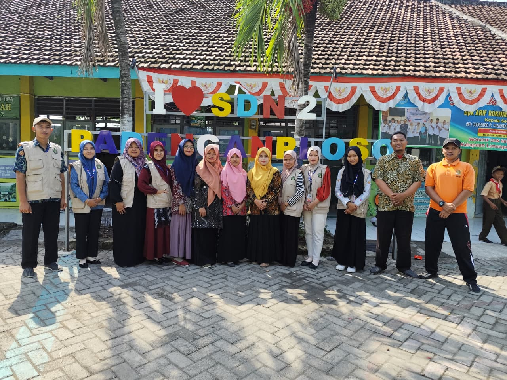
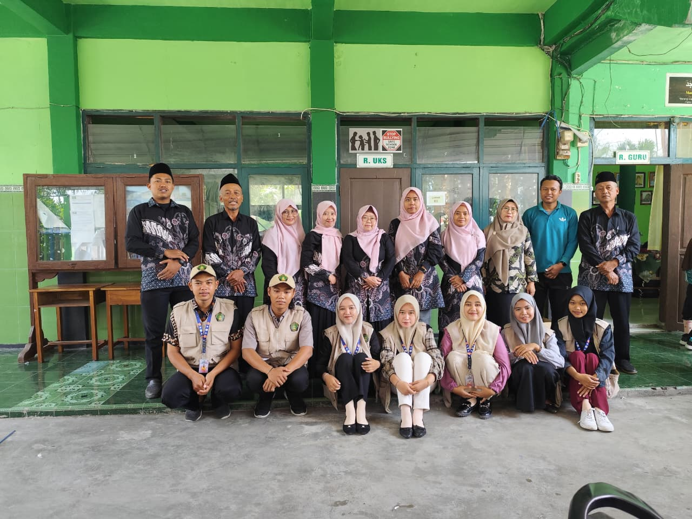

Galeri Kegiatan KKN
Dokumentasi berbagai kegiatan selama KKN berlangsung:
Survei Lokasi KKN

Pembukaan KKN
Bimbingan Belajar

SDN Padenganploso 2

MI Al-Hidayah
MI Muhammadiyah 2
Pelatihan Digital
Pengecatan Polisi Tidur